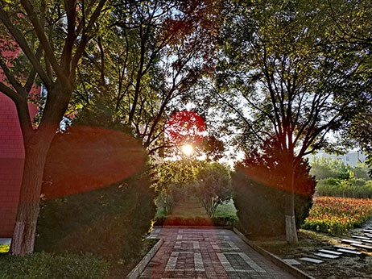
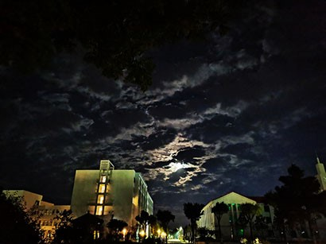
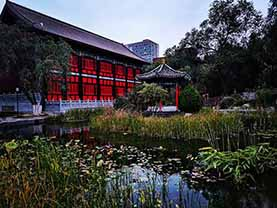
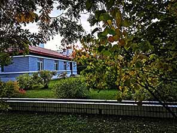

fulfilling school life .




my senior high school life


This is a video about the opening ceremony of my high school sports meeting.

my experience of computer science
My parents are both teachers, so I have the opportunity to have access to the computer when I was very young. Because my parents like to use slides in class, I learned how to make slides first. When I was in primary school, I liked to design cool custom animations to show the contents of slides, which I thought was very interesting. In the days that followed, I basically understood every program in the computer. Basically, problems with the computer operating system and the use of office software will not trouble me. It is a pity that I haven't systematically studied further knowledge about developing programs and designing websites before college. Junior high school and senior high school teachers do not attach importance to computer courses because of the entrance examination and the computer courses are not within the scope of the examination. At the same time we also don't have enough time to learn computer knowledge. I think such a situation will gradually get better in the future.
my university life